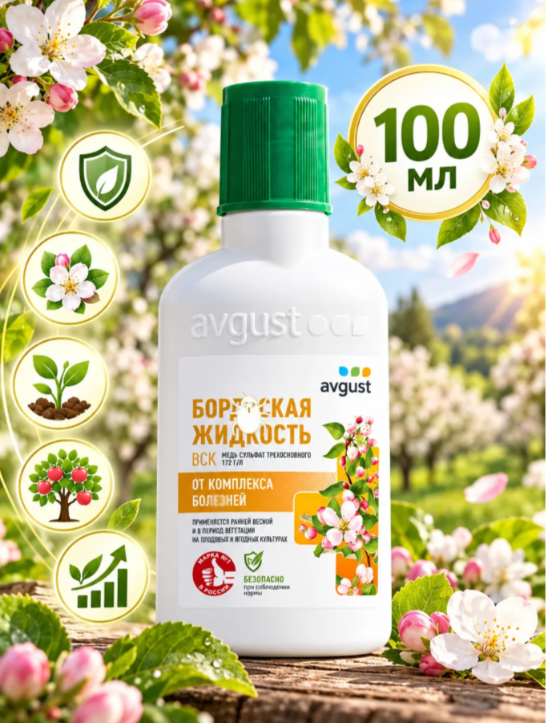
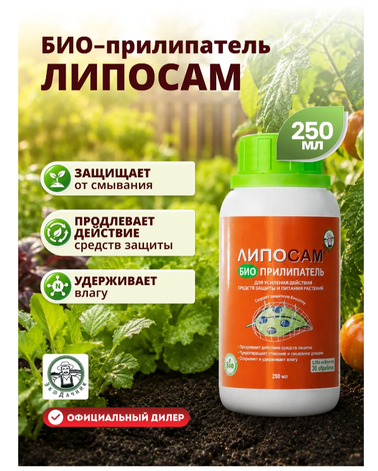

Профилактические меры
Как поддерживать туи здоровыми и снизить риск болезней и вредителей.
Обработка бордоской жидкостью весной и осенью
Её используют только для профилактики грибных болезней (шютте, ржавчина и другие), а не для лечения уже активного поражения.
Как приготовить раствор. Для туй нужна строго 1%-ная бордоская жидкость. Если взять крепче, хвоя получит ожог. Чтобы сделать раствор самостоятельно, возьмите по 100 г медного купороса и извести на 10 л воды. Если используете готовую смесь из магазина — следуйте инструкции на упаковке, но убедитесь, что концентрация именно 1%. Готовый раствор применяйте сразу.
Когда обрабатывать:
- Весной — в период активного роста молодой хвои.
- Осенью — чтобы снизить запас грибковых спор, которые могут перезимовать на хвое, ветвях и в приствольном круге. Важно завершить осеннюю обработку минимум за 2 недели до устойчивых заморозков.
Как проводить обработку:
- Опрыскивайте всю крону — от верхушки до нижних ветвей.
- Не забывайте про приствольный круг: споры грибка часто оказываются в опаде или в верхнем слое почвы, и обработка только дерева не даст полного эффекта.
- Выбирайте сухую, безветренную погоду. Лучше делать это рано утром, вечером или в пасмурный день — так раствор не испарится быстро и не вызовет ожогов под палящим солнцем.
- Температура воздуха должна быть выше +5…+7 °C: при более прохладной погоде эффективность препарата падает.
- Старайтесь равномерно смочить хвою и ветви.
Важные предостережения:
- Хвоя туи довольно чувствительна к меди. Не превышайте концентрацию — это частая причина ожогов.
- Если на туе уже есть явные признаки болезни (побурение, пятна, чёрные точки), одной профилактической обработки может быть мало. В таком случае сначала механически удалите сильно поражённые побеги, а уже потом проводите опрыскивание. Иногда требуется курс обработок системными фунгицидами с интервалом в 10–14 дней.
- Если планируете совместить фунгицид с инсектицидом (против вредителей), проверьте совместимость препаратов.
- Работайте в средствах защиты: перчатках, очках, респираторе.
В целом, регулярная профилактическая обработка бордоской жидкостью весной и осенью — хороший элемент системы ухода, который помогает поддерживать здоровье туи. Но помните: она работает в комплексе с правильной агротехникой — адекватным поливом, мульчированием, своевременной санитарной обрезкой. Если сомневаетесь в диагнозе или в схеме обработок для конкретного случая, проконсультируйтесь с агрономом или сотрудником садового центра.

Нажмите на фото — откроется страница препарата на Озоне
Прилипатель «Липосам»
Применять при обработке прилипатель «Липосам». Помогает удобрениям и средствам защиты растений удерживаться на листьях, семенах и корнях — плёнка-мембрана не даёт препаратам смыться дождём, стечь или испариться до 20–30 дней, при этом не мешает дыханию и фотосинтезу растений.
Как разводить и смешивать. Сначала разведите гель с водой примерно 1:1 до однородной массы, затем понемногу доливайте воду до нужного объёма, помешивая. Порядок в баковой смеси: химпрепараты → микроэлементы → «Липосам» → в конце биопрепараты.
Препарат нетоксичен для людей, животных и насекомых, подходит для органического земледелия; хранить при 0…+20 °C, срок годности — 3 года.
Где купить: продаётся в фасовках от 8 мл (пакетики) до 10 л. Ссылка на препарат на Озоне.

Нажмите на фото — откроется страница препарата на Озоне